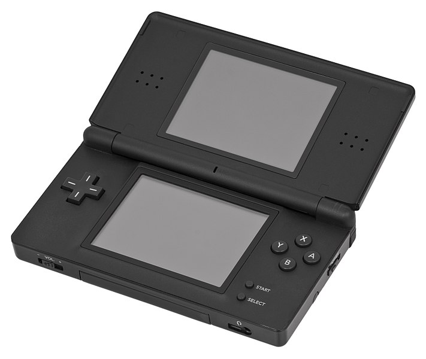
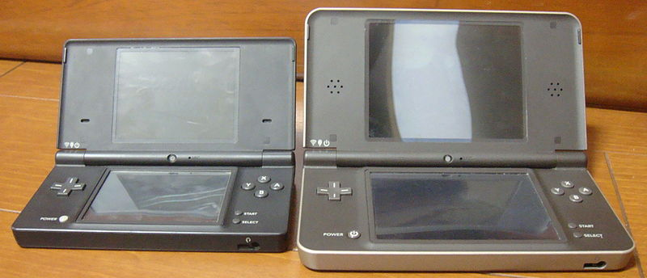

The DS and DS Lite were released in 2004 and 2006 respectively. The DS sold for $149.99 in 2004 dollars ($243.78 2023 dollars), while the DS Lite sold for $129.99 ($197.97 2023 dollars). The DS had single-player GBA support, along with DS single and multiplayer (if the game supports it) via wireless communication with someone who has the same game or by using DS Download Play. There is also PictoChat, a local messaging service using text or drawing via the DS's lower screen being a touch screen. The DS Lite is a more condensed version of the DS, and has the ability to change the screen brightness, with the drawback of GBA games sticking out of Slot 2 (the GBA game slot). Its battery life was 15-19 hours on its lowest battery setting. There are also option paks and extentions which one would plug in into the GBA slot.
The DSi and the DSi XL were released in North America in 2009 and 2010 respectively. The DSi sold for $169.99 ($243.27 2023 dollars) while the DSi XL sold for $189.99 ($267.81 2023 dollars). The DSi and DSi XL both had a front and back 0.3 megapixel camera, 256 MB of internal flash storage, along with SD Card support for up to 32 GB. The DSi has 9-14 hours of battery life, while the DSi XL 13-17 hours. The DSi and DSi XL removed GBA support and all option paks/extensions for it.
